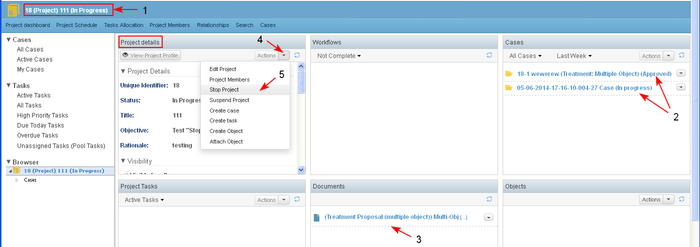

"Stop Project" is an action for ceasing a project before the work on it is completed.
A project could be stopped at any time for different reasons before it is successfully concluded.
Preconditions
- A project could be stopped when in state "Approved" or "In Progress" or "On Hold".
- A project could be stopped only by an user with the role of "Project Manager".
- The user starts the action "Stop Project" from:
- Project dashboard/ Project details dashlet/ Actions/ "Stop Project" (4-5)
- View Project Profile/ "Stop Project"
- Personal dashboard/ My projects dashlet/ "Stop Project" for a project
In the project (1) there may be cases / tasks in an active state (2) and added documents/ objects (3).

- The system displays the message "The project will be stopped permanently. Are you sure? Yes/ No". The user clicks "Yes":

- The user is transferred to the Project details page.
- The project state is changed to "Stopped" (1)
- All existing tasks and sub-projects/ cases on the project which are in an active state are stopped also and their status is set to "Stopped" (2) and NO Actions on the project are available (3).
- The project state is changed to "Stopped" (1)